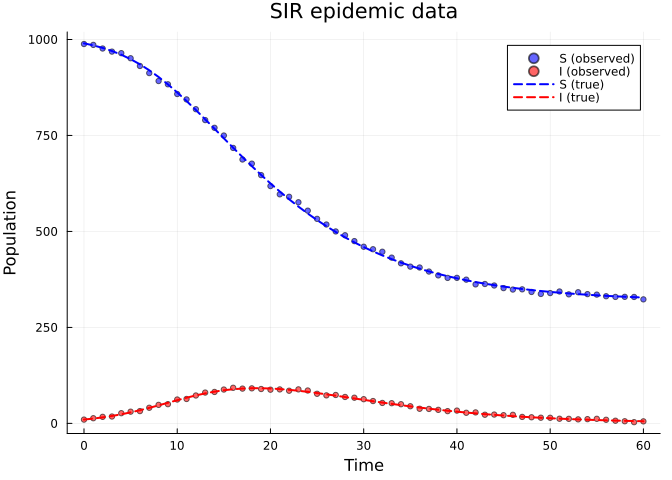
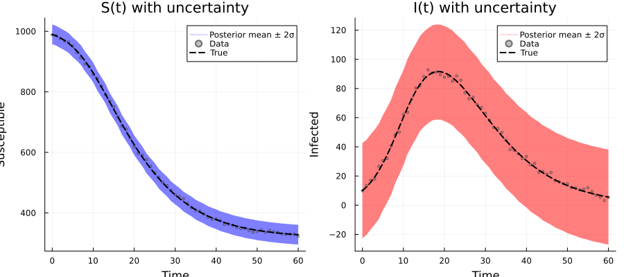
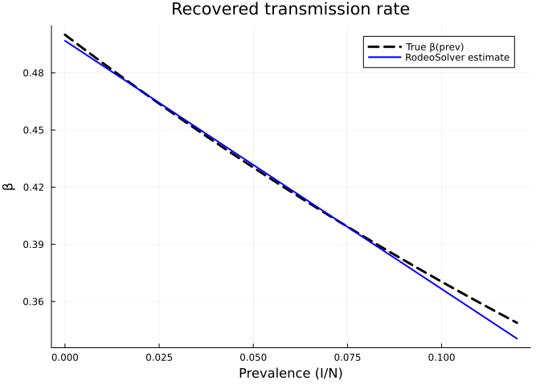
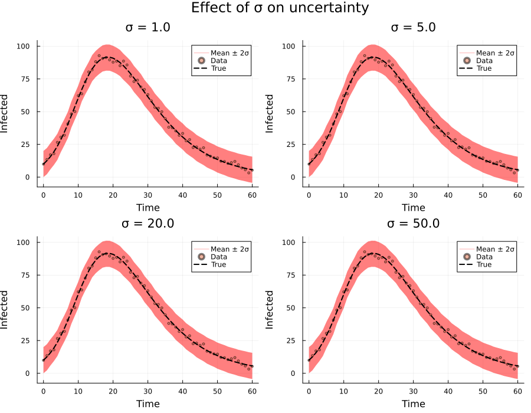
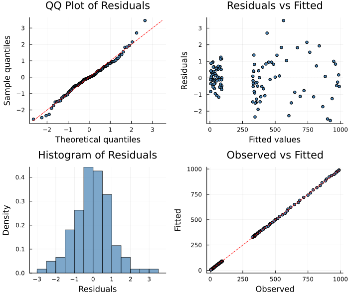

Probabilistic ODE Fitting with RodeoSolver
Overview
The RodeoSolver takes a fundamentally different approach to fitting partially specified models: instead of treating the ODE as a hard constraint, it embeds it within a probabilistic state-space model. The ODE is enforced as pseudo-observations in a Kalman filter/smoother, with an integrated Brownian motion (IBM) prior providing a flexible model for the solution.
This approach provides:
- Automatic uncertainty quantification — the Kalman smoother posterior gives a distribution over the ODE solution at each time point
- Graceful handling of model misspecification — the IBM noise parameter $\sigma$ controls how strictly the ODE is enforced
- Marginal likelihood for parameter estimation — the Kalman filter computes a marginal likelihood that is exact for the linearized Gaussian surrogate model (the ODE itself is nonlinear, so this is still an approximation to the true marginal likelihood)
This vignette demonstrates how to use the RodeoSolver, interpret its uncertainty estimates, and tune its key parameters.
Setup
using PartiallySpecifiedModels
using PartiallySpecifiedModels: solve, probsolve
using OrdinaryDiffEq
using Plots
using Random
Random.seed!(42)TaskLocalRNG()Example: SIR Model with Density-Dependent Transmission
We fit an SIR model with an unknown prevalence-dependent transmission rate $\beta(I/N)$:
\[\frac{dS}{dt} = -\beta(I/N) \cdot S \cdot I/N, \quad \frac{dI}{dt} = \beta(I/N) \cdot S \cdot I/N - \gamma I, \quad \frac{dR}{dt} = \gamma I\]
The true transmission rate declines with prevalence: $\beta(\text{prev}) = 0.5 \, e^{-3 \cdot \text{prev}}$.
Generate data
function sir_true!(du, u, p, t)
S, I, R = u; N = S + I + R
prev = I / N; β = 0.5 * exp(-3.0 * prev)
du[1] = -β * S * I / N
du[2] = β * S * I / N - 0.25 * I
du[3] = 0.25 * I
end
u0 = [990.0, 10.0, 0.0]; tspan = (0.0, 60.0)
sol_ode = OrdinaryDiffEq.solve(ODEProblem(sir_true!, u0, tspan), Tsit5(), saveat=1.0)
data_t = sol_ode.t
σ_S, σ_I = 5.0, 2.0
data_SI = max.(hcat(sol_ode[1,:], sol_ode[2,:]) .+
hcat(σ_S .* randn(length(data_t)), σ_I .* randn(length(data_t))), 0.01)
scatter(data_t, data_SI[:, 1], label="S (observed)", ms=3, alpha=0.6, color=:blue,
xlabel="Time", ylabel="Population", title="SIR epidemic data")
scatter!(data_t, data_SI[:, 2], label="I (observed)", ms=3, alpha=0.6, color=:red)
plot!(sol_ode.t, sol_ode[1,:], label="S (true)", lw=2, color=:blue, ls=:dash)
plot!(sol_ode.t, sol_ode[2,:], label="I (true)", lw=2, color=:red, ls=:dash)
Define the PSM
function sir!(du, u, p, t)
S, I, R = u; N = S + I + R
prev = I / N
β_val = p.β(prev)
foi = max(β_val, 0.001) * S * I / N
du[1] = -foi; du[2] = foi - 0.25 * I; du[3] = 0.25 * I
end
approx_β = BSplineApproximator(:β, (0.0, 0.15), 8; initial=0.4)
prob = PSMProblem(sir!, u0, tspan, [approx_β];
data_times=data_t, data_values=data_SI,
obs_to_state=[1, 2], known_params=(γ=0.25,), solver=Tsit5())PSMProblem{typeof(sir!), Vector{Float64}, Gaussian, Tsit5{typeof(OrdinaryDiffEqCore.trivial_limiter!), typeof(OrdinaryDiffEqCore.trivial_limiter!), Static.False}}(sir!, [990.0, 10.0, 0.0], (0.0, 60.0), BSplineApproximator[BSplineApproximator(:β, (0.0, 0.15), 8, PartiallySpecifiedModels.var"#6#7"{Float64}(0.4))], [0.0, 1.0, 2.0, 3.0, 4.0, 5.0, 6.0, 7.0, 8.0, 9.0 … 51.0, 52.0, 53.0, 54.0, 55.0, 56.0, 57.0, 58.0, 59.0, 60.0], [988.1832125927411 9.896037666331825; 985.8975437423887 13.461390776142522; … ; 329.35354655287034 3.2084058156376694; 323.05533131939933 5.286766967095861], [1.0 1.0; 1.0 1.0; … ; 1.0 1.0; 1.0 1.0], [1, 2], (γ = 0.25,), Gaussian(), Tsit5{typeof(OrdinaryDiffEqCore.trivial_limiter!), typeof(OrdinaryDiffEqCore.trivial_limiter!), Static.False}(OrdinaryDiffEqCore.trivial_limiter!, OrdinaryDiffEqCore.trivial_limiter!, static(false)), Dict{Symbol, Any}(), false, Float64[], nothing)Fitting with RodeoSolver
The key RodeoSolver parameters are:
| Parameter | Description | Default |
|---|---|---|
n_steps | Number of solver time steps | 200 |
n_deriv | Order of IBM prior (number of derivatives) | 3 |
sigma | IBM scale parameters (one per state variable) | auto-estimated |
obs_var | Observation noise variance | auto-estimated |
method | Likelihood method: :basic or :fenrir | :basic |
interrogate | Interrogation: :kramer or :schober | :kramer |
sol = solve(prob, RodeoSolver(
n_steps=200,
n_deriv=3,
maxiters=200,
verbose=true
))RodeoSolver: n_steps=200, n_deriv=3, method=basic, interrogate=kramer
σ (IBM scale): [6.65, 0.896, 1.0]
obs_var: 266.0
8 approximator params
Stage 1: Nelder-Mead (derivative-free)...
Iter Function value √(Σ(yᵢ-ȳ)²)/n
------ -------------- --------------
0 5.570809e+02 1.602484e+02
* time: 0.01381993293762207
40 4.620297e+02 1.787995e+00
* time: 0.2457408905029297
80 4.557684e+02 2.250911e-01
* time: 0.3637669086456299
120 4.554846e+02 1.134261e-02
* time: 0.4789090156555176
160 4.554355e+02 1.823731e-03
* time: 0.6022639274597168
200 4.554273e+02 6.765019e-04
* time: 0.7089879512786865
NM loss: 455.43
Stage 2: L-BFGS refinement...
Iter Function value Gradient norm
0 4.554273e+02 4.629236e+00
* time: 7.009506225585938e-5
20 4.553973e+02 5.203472e+00
* time: 0.8147342205047607
40 4.553393e+02 2.516973e-01
* time: 1.8832621574401855
Converged: true
Final -loglik: 455.34
FS cycle 1: λ = [2.65]
FS cycle 2: λ = [63500.0]
FS cycle 3: λ = [63500.0]
Final λ after FS: [63500.0]
Final: data_SS=1505.9 -loglik=455.34
PSMSolution((β = [0.4968315671491378, 0.4689211728084287, 0.44101077810659517, 0.4131003822248754, 0.385189984654349, 0.3572795860204596, 0.3293691871926964, 0.30145878819263017]), -455.4611765108434, 1505.921392506522, 2.0000707328344913, [63456.84878183671], [990.0 10.0; 985.2521902546524 12.256277434385707; … ; 328.9885658616604 6.1045232712932975; 328.14003201461315 5.633239956761509], [988.1832125927411 9.896037666331825; 985.8975437423887 13.461390776142522; … ; 329.35354655287034 3.2084058156376694; 323.05533131939933 5.286766967095861], [0.0, 1.0, 2.0, 3.0, 4.0, 5.0, 6.0, 7.0, 8.0, 9.0 … 51.0, 52.0, 53.0, 54.0, 55.0, 56.0, 57.0, 58.0, 59.0, 60.0], Dict{Symbol, Any}(:β => DataInterpolations.CubicSpline{Vector{Float64}, Vector{Float64}, Vector{Float64}, Vector{Float64}, Vector{Float64}, Vector{Float64}, Float64}([0.4968315671491378, 0.4689211728084287, 0.44101077810659517, 0.4131003822248754, 0.385189984654349, 0.3572795860204596, 0.3293691871926964, 0.30145878819263017], [0.0, 0.02142857142857143, 0.04285714285714286, 0.06428571428571428, 0.08571428571428572, 0.10714285714285714, 0.12857142857142856, 0.15], Float64[], DataInterpolations.CubicSplineParameterCache{Vector{Float64}}(Float64[], Float64[]), [0.0, 0.02142857142857143, 0.02142857142857143, 0.021428571428571422, 0.021428571428571436, 0.021428571428571422, 0.021428571428571422, 0.021428571428571436], [0.0, -5.130911927380811e-7, -2.666328220948428e-6, -4.238776285451868e-6, -2.445639244974729e-6, 1.267230562865455e-7, -5.945373772411704e-7, 0.0], DataInterpolations.ExtrapolationType.Linear, DataInterpolations.ExtrapolationType.Linear, FindFirstFunctions.Guesser{Vector{Float64}}([0.0, 0.02142857142857143, 0.04285714285714286, 0.06428571428571428, 0.08571428571428572, 0.10714285714285714, 0.12857142857142856, 0.15], Base.RefValue{Int64}(1), true), false, false)), (converged = true, iterations = 49, neg_loglik = 455.4611765108434, method = :basic, obs_var = 265.66511626326957, sigma = [6.651278812733418, 0.8957443840642172, 1.0], sol_variance = [0.0 0.0 0.0; 7.910720552665385e-6 1.684391947336591e-7 1.810735457582506e-7; … ; 0.00019857592438454145 8.848707630028761e-7 0.00010176827005959873; 0.00020463198842005824 8.963360587376518e-7 0.00010350137037906655]))Solution uncertainty
The RodeoSolver stores the posterior variance from the Kalman smoother in sol.convergence.sol_variance:
Solution variance matrix: (61, 3) (n_times × n_observed)
Max std(S): 0.0143
Max std(I): 0.002Posterior credible bands
We can construct approximate 95% credible bands for the ODE solution from the posterior variance:
p_bands = plot(layout=(1, 2), size=(900, 400))
# S(t) with ±2σ bands
μ_S = sol.fitted_values[:, 1]
σ_S_post = sqrt.(sol_var[:, 1] .+ sol.convergence.obs_var)
plot!(p_bands[1], data_t, μ_S, ribbon=2 .* σ_S_post,
label="Posterior mean ± 2σ", color=:blue, alpha=0.3,
xlabel="Time", ylabel="Susceptible", title="S(t) with uncertainty")
scatter!(p_bands[1], data_t, data_SI[:, 1], label="Data", ms=2, alpha=0.5, color=:gray)
plot!(p_bands[1], sol_ode.t, sol_ode[1,:], label="True", lw=2, color=:black, ls=:dash)
# I(t) with ±2σ bands
μ_I = sol.fitted_values[:, 2]
σ_I_post = sqrt.(sol_var[:, 2] .+ sol.convergence.obs_var)
plot!(p_bands[2], data_t, μ_I, ribbon=2 .* σ_I_post,
label="Posterior mean ± 2σ", color=:red, alpha=0.3,
xlabel="Time", ylabel="Infected", title="I(t) with uncertainty")
scatter!(p_bands[2], data_t, data_SI[:, 2], label="Data", ms=2, alpha=0.5, color=:gray)
plot!(p_bands[2], sol_ode.t, sol_ode[2,:], label="True", lw=2, color=:black, ls=:dash)
p_bands
Recovered β(prevalence)
prev_grid = range(0.0, 0.12, length=100)
β_true = [0.5 * exp(-3.0 * p) for p in prev_grid]
β_est = [sol.unknown_functions[:β](p) for p in prev_grid]
plot(prev_grid, β_true, label="True β(prev)", lw=3, color=:black, ls=:dash,
xlabel="Prevalence (I/N)", ylabel="β",
title="Recovered transmission rate")
plot!(prev_grid, β_est, label="RodeoSolver estimate", lw=2, color=:blue)
Effect of the IBM Scale Parameter σ
The IBM scale parameter $\sigma$ controls how far the solution can deviate from the ODE constraint. Larger $\sigma$ means the solver is less strict about the ODE being satisfied exactly, leading to wider posterior bands but more flexibility.
sigmas = [1.0, 5.0, 20.0, 50.0]
p_sigma = plot(layout=(2, 2), size=(900, 700),
plot_title="Effect of σ on uncertainty")
for (idx, σ_val) in enumerate(sigmas)
sol_k = solve(prob, RodeoSolver(
n_steps=200, n_deriv=3, maxiters=200, verbose=false,
sigma=fill(σ_val, 3), obs_var=25.0))
sv = sol_k.convergence.sol_variance
μ_I = sol_k.fitted_values[:, 2]
σ_I = sqrt.(sv[:, 2] .+ 25.0)
plot!(p_sigma[idx], data_t, μ_I, ribbon=2 .* σ_I,
label="Mean ± 2σ", color=:red, alpha=0.3,
xlabel="Time", ylabel="Infected",
title="σ = $σ_val")
scatter!(p_sigma[idx], data_t, data_SI[:, 2], label="Data", ms=2, alpha=0.5)
plot!(p_sigma[idx], sol_ode.t, sol_ode[2,:], label="True", lw=2, color=:black, ls=:dash)
end
p_sigma
The Probabilistic ODE Solver Under the Hood
The RodeoSolver implements a state-space model where:
Prior: $q$-times integrated Brownian motion (IBM) gives a Gaussian process prior on the solution, modelling state, first derivative, second derivative, etc.
Prediction: $X_{n+1} = Q \cdot X_n + \text{noise}$ where $Q$ is the IBM transition matrix (Taylor expansion)
ODE update: At each time step, the ODE residual $W \cdot X - f(X, t) = 0$ is treated as a noisy observation, conditioning the prior on the ODE being approximately satisfied
Smoothing: A backward RTS smoother refines the estimates using future information
You can access the raw probabilistic solver output:
Solution at t=30:
State 1: mean=460.51, std=0.0056
State 2: mean=61.23, std=0.0018
State 3: mean=478.26, std=0.0091Method Variants
Basic vs Fenrir
The method parameter selects the likelihood approximation:
:basic(default) — evaluate the data likelihood at the posterior mean from the Kalman smoother. Fast and usually sufficient.:fenrir— a forward-backward scheme that additionally conditions on data in the backward pass, giving a tighter likelihood approximation for noisy data.
Schober vs Kramer interrogation
The interrogate parameter controls how the ODE residual is linearised:
:kramer(default) — uses a first-order Taylor expansion of the ODE right-hand side, giving a locally linear observation model. More accurate for nonlinear ODEs.:schober— simply evaluates the ODE at the predicted mean. Simpler and faster, but less accurate.
Diagnostic Plots
A standard 4-panel diagnostic display assesses residual behaviour for the probabilistic fit.
using PartiallySpecifiedModels: appraise
diag = appraise(sol)
p_qq = scatter(diag.qq_theoretical, diag.qq_sample,
xlabel="Theoretical quantiles", ylabel="Sample quantiles",
title="QQ Plot of Residuals", ms=3, legend=false, color=:steelblue)
mn, mx = extrema(vcat(diag.qq_theoretical, diag.qq_sample))
plot!(p_qq, [mn, mx], [mn, mx], color=:red, ls=:dash, label="")
p_rf = scatter(diag.fitted, diag.residuals,
xlabel="Fitted values", ylabel="Residuals",
title="Residuals vs Fitted", ms=3, legend=false, color=:steelblue)
hline!(p_rf, [0], color=:gray, ls=:dot)
p_hist = histogram(diag.residuals, normalize=:pdf,
xlabel="Residuals", ylabel="Density",
title="Histogram of Residuals", legend=false, color=:steelblue, alpha=0.7)
p_of = scatter(diag.observed, diag.fitted,
xlabel="Observed", ylabel="Fitted",
title="Observed vs Fitted", ms=3, legend=false, color=:steelblue)
mn2, mx2 = extrema(vcat(diag.observed, diag.fitted))
plot!(p_of, [mn2, mx2], [mn2, mx2], color=:red, ls=:dash, label="")
plot(p_qq, p_rf, p_hist, p_of, layout=(2, 2), size=(700, 600))
Durbin-Watson: 1.404, 2.009Key Takeaways
- RodeoSolver provides automatic uncertainty via the Kalman smoother posterior
- σ controls the ODE fidelity: smaller σ → tighter ODE constraint, less uncertainty; larger σ → more flexible, wider bands
- obs_var is the observation noise: this is added to the solution variance to get total prediction uncertainty
- The marginal likelihood automatically balances data fit and ODE fidelity
- For well-conditioned problems, RodeoSolver gives results comparable to LAML with the bonus of built-in uncertainty